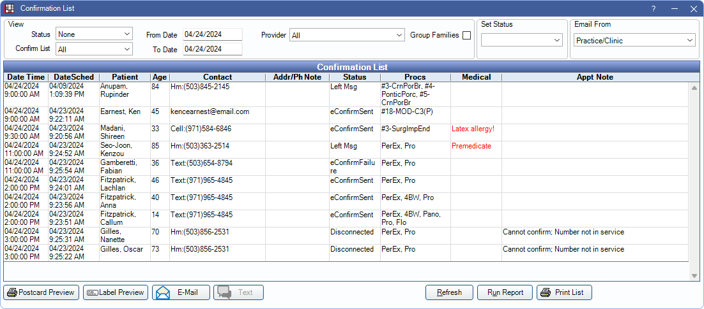
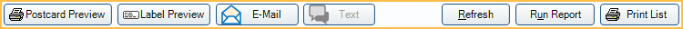
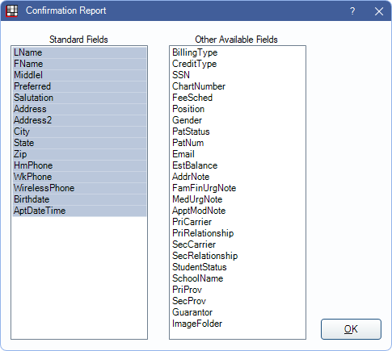

Confirmation List
The Confirmation List is a way to manually manage reminders and confirmations for scheduled appointments.
In Appointment Lists, click Confirmations.
Track communication with patients and send batch emails, postcards, and text messages. Users can browse to other windows while the Confirmation List is open.
To customize confirmation message text and appointment status options, Confirmation Setup.
To automatically send appointment reminders and confirmations, see eReminders and eConfirmations.
 See our video: Confirmation List.
See our video: Confirmation List.
View / Set Status / Email From
Use the View filters to determine which appear in the Confirmations List grid. Use the Set Status and Email From options to help manage the list.

- Status: Filter by appointments with a specific Confirmation Status. Set None to see all.
- Confirm List: Select which type of appointments show:
- All: Include all appointments.
- Recall Only: Only include recall appointments (patient has at least one completed procedure and a scheduled appointment with a procedure marked as Is Hygiene Procedure).
- Exclude Recall: Don't include recall appointments (Appointment has no procedures marked as Is Hygiene Procedure).
- Hygiene Prescheduled: Only include appointments created more than two months before the Scheduled date.
- From/To Date: The date range of the appointments to list. Defaults to the next two business days.
- Provider: Filter patients by provider on the appointment.
- Clinic: Filter by clinic the appointment is scheduled in.
- Group Families: Group members within a family together. When checked, and all family members are selected, only one reminder is sent per family, using the multiple patients in one family message template in Confirmation Setup.
After setting filters, click Refresh at the bottom to update results.
Set Status: Change the confirmation status of selected appointments. First, highlight the appointment(s), then select a Set Status option. The option is grayed out if the user does not have the ApptConfirmStatusEdit security permission.
Email From: Select the email address to use when sending email confirmations.
- If a single practice, Practice/Clinic refers to the default email set in Email Setup.
- If using clinics, Practice/Clinic refers to the email address of the patient's clinic (Clinic List). If there is no clinic email, the practice default is used.
Confirmation List Grid
All patients who meet the view filter criteria are listed.

Column definitions:
- Date Time: Date and time of the scheduled appointment.
- DateSched: Date and time the appointment was scheduled.
- Contact: Details for the confirmation contact method. Typically this matches the patient's Preferred Confirm Method (Edit Patient Information). Mail = Mail, Hm = HmPhone, Wk = WkPhone, Cell = Wireless, Email address = Email, SeeNotes = See Notes, Text = Text Message.
- Status: The Confirmation Status. Use to track communication with the patient. Customize options in Definitions, Appt Confirmed. This status affects the color of the confirmation circle in the appointment schedule.
- Procs: Procedures attached to the appointment.
- Medical: Displays Medical Urgent notes, or if the patient is marked as Premedicate.
Navigation:
- When one family member is highlighted, all other family members are highlighted in red text.
- To edit a patient's appointment, double-click a row.
- Right-click options:
- Select Patient: Select the patient only.
- See Chart: Select the patient and open the Chart Module.
- Send to Pinboard: Select the patient, open the Appointments Module, and place the appointment on the Pinboard to reschedule.
Buttons
Use the buttons at the bottom to help manage the Confirmations List.
- Postcard Preview: View, then print postcards for the selected appointments. When no patients are selected, only patients with Mail or None as their Preferred Confirm Method are selected. See By Postcard below for additional details.
- Label Preview: View, then print labels for the selected appointments. Labels are printed on a standard sheet of 30.
- Email: Click to send a confirmation email to the selected patients. When no patients are selected, only patients with Email as their Preferred Confirm Method are selected. See Managing the Confirmations List, By Email below for additional details.
- Text: Click to text confirmations to selected patients. When no patients are selected, only patients with TextMessage as their Preferred Confirm Method are selected. Patients who have already been sent a confirmation text are not included. See Managing the Confirmations List, By Text below for additional details.
- Refresh: Click when updating the confirmation list results using the View filters.
- Run Report: Click to create a customized confirmation report and send the data to a simple text file. From there, merge it with any Word template to print customized postcards, letters, etc. See Confirmation Report below for additional details.
- Print List: Click to print the list as shown.
Managing the Confirmation List
Manually managing the Confirmation List differs from practice to practice. Below are some options with information.
By Phone: Here are a few tips when calling patients to confirm upcoming appointments.
- A phone number shows in the Contact column when the preferred confirmation method for a patient is None, HmPhone, WkPhone, or Wireless and a corresponding phone number has been entered.
- Manually change confirmation status using the Set Status dropdown.
- Commlog entries should be made for every phone call so there is a record of every attempt to contact the patient.
- If a patient needs to reschedule, right-click on the appointment, then click Send to Pinboard.
By Postcard: Click Postcard Preview to send postcards to selected patients.
- Define postcard layout in Confirmation Setup.
- Customize the postcard text in Confirmation Setup.
- A Commlog is generated for each patient.
By Email: Click Email to send confirmation reminders to patients via email. Use the Email From field above to choose the sending email address.
- When an email is sent, the confirmation status changes to the status selected for Status for emailed confirmation in Confirmation Setup.
- Customize the email message in Confirmation Setup.
- Patients (or guarantor) must have an email address entered.
- Regular email is not a secure method of sending PHI.
By Text: Click Text to send a confirmation message to the selected patients via text message.
- The practice must be signed up for eServices Texting.
- Patients must have a wireless phone number and be set to accept text messages (Edit Patient Information window, Text OK).
- Customize the message text in Confirmation Setup.
- Text messaging is not a secure method of sending PHI.
- When a text is sent, the confirmation status is changed to the status selected for Status for text messaged confirmations in Confirmation Setup.
- A Commlog is generated for each patient.
Confirmation Report
Click Run Report to open the Confirmation Report window.
Highlight the fields to include in the report, then click OK to generate the report. The User Query is launched where data can be exported.